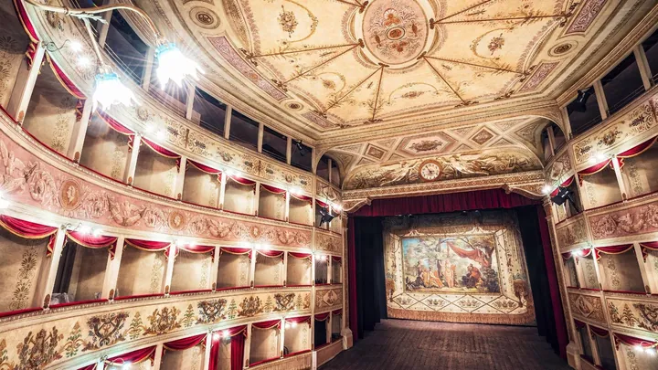

da ven 6 nov a sab 10 apr
La Sena viva
Il Teatro de la Sena di Feltre torna ad alzare il sipario con La Sena Viva, una stagione teatrale nata dalla collaborazione tra il Comune di Feltre e la Fondazione Teatro Stabile del Veneto – Teatro Nazionale.
 Indicazioni
Indicazioni
- Costi e prenotazioni
- Costo non indicato · Prenotazione non indicata
- Programma
- Programma da verificare. Apri la fonte ufficiale per orari e possibili aggiornamenti.
- In caso di maltempo
- Nessuna indicazione specifica pubblicata.
- Note
- Acquisito automaticamente dalla fonte.
L’EVENTO
Descrizione completa
Il Teatro de la Sena di Feltre torna ad alzare il sipario con La Sena Viva, una stagione teatrale nata dalla collaborazione tra il Comune di Feltre e la Fondazione Teatro Stabile del Veneto – Teatro Nazionale.
Dieci titoli , che da novembre 2026 fino ad aprile 2027 animeranno lo storico palcoscenico dove nel XVII secolo Carlo Goldoni presentò le sue prime opere di teatro musicale. Selezionate tramite l’avviso pubblico Cantiere Goldoni promosso dallo Stabile del Veneto in collaborazione con Arteven Circuito Multidisciplinare Regionale e con il sostegno della Regione del Veneto, sei delle migliori compagnie teatrali venete, quali Pantakin, Anagoor, Centro Teatrale da Ponte, Mosaico Errante, Theama Teatro e La Piccionaia, riscoprono l’eredità goldoniana e si intrecciano con un cartellone fatto di spettacoli originali e produzioni del TSV- Teatro Nazionale.
Un programma composito che presenta la “Piccola Fenice” come uno spazio di cultura vivo e produttivo.
La ripartenza della stagione teatrale al Teatro de la Sena di Feltre, rappresenta molto più di una semplice rassegna di spettacoli: è un evento storico e culturale di portata straordinaria.
Chiuso per motivi di sicurezza per quasi un secolo (dal 1929), questo gioiello architettonico torna finalmente a vivere, trasformando la fine di un lunghissimo oblio in una festa per l'intero territorio veneto e nazionale.
IL PROGRAMMA
Programma e orari
Appuntamenti raccolti dalle fonti elencate. Dove manca un orario, non è ancora disponibile in questa scheda.
Programma pubblicato
- 2026-11-06 — 2026-11-06 · 20:00:00
- 2026-12-05 — 2026-12-05 · 20:00:00
- 2026-12-19 — 2026-12-19 · 20:00:00
- 2027-01-30 — 2027-01-30 · 20:00:00
- 2027-02-13 — 2027-02-13 · 20:00:00
- 2027-02-27 — 2027-02-27 · 20:00:00
- 2027-03-13 — 2027-03-13 · 10:00:00
- 2027-04-10 — 2027-04-10 · 10:00:00
INFORMAZIONI UTILI
Prima di partire
- Controllare la fonte prima di partire.
ORGANIZZAZIONE